|
|
|
|
|Instituto Tecnológico de Costa Rica|Escuela de Matemática| M. Sc. Geovanni Figueroa M. |
1 2 3
4 5
6 7
8 9
10 11
12 13
14 15
16
|
|
Propiedades de la Transformada de Laplace Como la transformada de Laplace se define en términos de una integral impropia que puede ser divergente, existen funciones para las cuales no existe dicha transformada, incluso hay funciones discontinuas, como la del ejemplo anterior, que pueden tener transformada; entonces, ¿ bajo qué condiciones una funciones tienen transformada de Laplace ?. Antes de dar una respuesta parcial a esta pregunta debemos dar algunas definiciones.
En general, el requisito de que estos límites sean finitos en todos los
puntos
implica que las únicas discontinuidades de
Figura 1.2
Intuitivamente podríamos pensar que las funciones continuas a trozos son casi continua o que no son demasiado discontinua. Otra de las ideas importantes en el estudio de la existencia de la transformada de Laplace es que entendemos porqué una función no crezca demasiado rápido.
Intuitivamente esto significa que la función
Figura 1.3
Observación: algunas veces, para verificar que una función
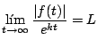
para algún valor de
Ejemplo
Solución
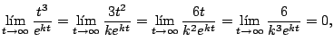
para cualquier número positivo
Ejemplo
Solución
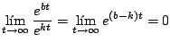
siempre y cuando
Observación: no es difícil comprobar que cualquier polinomio de grado 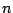 o función trigonométrica como Sen(bt), Cos(bt), con constante, son de orden exponencial, así como, las sumas y
productos de un número finito de estas funciones. En general, si
Ejemplo
Solución
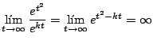
para cualquier valor de El siguiente resultado enuncia un resultado que parece obvio.
Demostración
Como
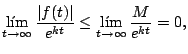
para cualquier 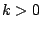, con lo cual
Observación: como 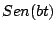 y Una vez definidos los conceptos de función continua a trozos y función de orden exponencial ya estamos listos para enunciar una condición necesaria para la existencia de la transformada de Laplace.
Demostración
Por ser
La primera integral
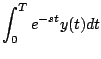
es una integral definida, por tanto existe. Para la segunda integral note que
Ahora, como
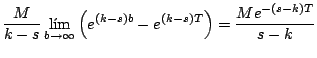
siempre y cuando 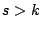, tenemos que la integral
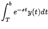
existe y con ello la transformada.
Observación: el teorema anterior enuncia una condición suficiente y no
necesaria para la existencia de la transformada de Laplace, es decir, puede
darse el caso de una función
Ejemplo
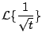
existe, aún cuando no cumple las hipótesis del teorema de existencia anterior.
Solución
Para calcular esta última integral sea
con lo cual
Ahora note que
Figura 1.4
Donde es el cuadrado de lado , que se muestra en la figura 1.4 Observe que si y son las regiones que se muestran en la figura 1.4 entonces
Con lo cual, tomando el límite
Y así, . Por lo tanto
El siguiente ejemplo muestra una función para la cual no existe la transformada de Laplace.
Ejemplo
no existe.
Solución
Y puesto que la integral impropia
diverge, la transformada no existe. Observación: la otra integral

es convergente para , pues
La integral
diverge, pues, por el criterio de comparación
para toda , con lo cual ambas integrales convergen o divergen; pero
diverge. Ahora vamos a enunciar algunos propiedades de la transformada.
Demostración
Ejemplo
Solución
por la propiedad de linealidad
Con la idea de aplicar la transformada de Laplace a la solución de ecuaciones diferenciales necesitamos calcular la transformada de una derivada.
Demostración
Integrando por partes
Con un argumento similar podemos demostrar que
Ejemplo
Solución
y de aquí concluimos que
El siguiente resultado generaliza la transformada de una derivada.
El siguiente teorema trata sobre el efecto que tiene en una transformada la
escalación de una función
Demostración
Ejemplo
calcule . Solución Usando la propiedad de escalamiento
|